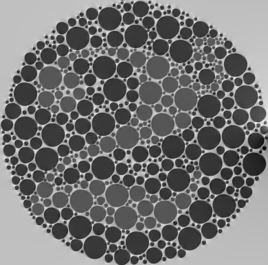
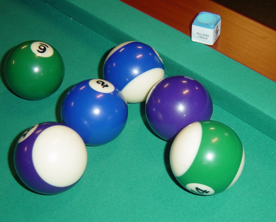
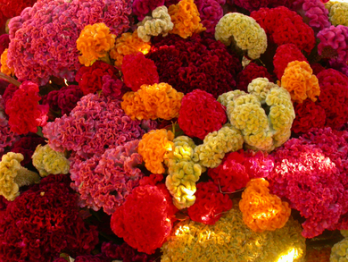

Part I. Algorithm of Basic Decolorization
Step 1. Translate the input image into Lab colour space.
Step 2. Use circshift() function to create neighbour matrix.
Step 3. Calculate delta_xy and sign of X and Y, sign_X , sign Y.
Step 4. Use sparse() to construct A.
For example a (4x3) matrix, the A will be like this:
Step 5. Calculate G then reshape the vector G to Grey Image gIm.
Step 6. Normalization gIm then output.
Step 2. Use circshift() function to create neighbour matrix.
Step 3. Calculate delta_xy and sign of X and Y, sign_X , sign Y.
Step 4. Use sparse() to construct A.
For example a (4x3) matrix, the A will be like this:
Step 5. Calculate G then reshape the vector G to Grey Image gIm.
Step 6. Normalization gIm then output.
Part II. Algorithm of CCPR
Step 1. Translate the input image into Lab colour space.
Step 2. Use circshift() function to create neighbour matrix of original color image.
Step 3. Calculate delta_xy and sign of X and Y.
Step 4. Create an empty vector T , the size is the length of delta_xy.
Step 5. For i = 1 to length(delta_xy), if delta_xy(i) > delta_xy, T(i) = 1, otherwise, T(i) = 0. After reshape the vector T to matrix, we can know the which number of pixel pairs is distinctive in their original color.
Step 6. Use circshift() function to create neighbour matrix of Grey colour image in Part 1.
Step 7. Create an empty vector T_G , the size is the length of delta_xy.
Step 8. For i = 1 to length(delta_xy), if delta_xy(i) > delta_xy, T(i) = 1, otherwise, T(i) = 0. After reshape the vector T_G to matrix, we can know the which number of pixel pairs is distinctive in their grey color.
Step 9.
T_G = T+ T_G;
distinctive_number = numel(T_G, T_G > 1);
If there is a value is the new T_G matrix which = 2, that pixel pairs can consider is distinctive after decolorization.
pixel_pairs = numel(T, T > 1);
To calculate pixel_pairs in the original image which is ||Omega||.
Step 10. ccrpRe = distinctive_number / pixel_pairs; and we can get the result.
Step 2. Use circshift() function to create neighbour matrix of original color image.
Step 3. Calculate delta_xy and sign of X and Y.
Step 4. Create an empty vector T , the size is the length of delta_xy.
Step 5. For i = 1 to length(delta_xy), if delta_xy(i) > delta_xy, T(i) = 1, otherwise, T(i) = 0. After reshape the vector T to matrix, we can know the which number of pixel pairs is distinctive in their original color.
Step 6. Use circshift() function to create neighbour matrix of Grey colour image in Part 1.
Step 7. Create an empty vector T_G , the size is the length of delta_xy.
Step 8. For i = 1 to length(delta_xy), if delta_xy(i) > delta_xy, T(i) = 1, otherwise, T(i) = 0. After reshape the vector T_G to matrix, we can know the which number of pixel pairs is distinctive in their grey color.
Step 9.
T_G = T+ T_G;
distinctive_number = numel(T_G, T_G > 1);
If there is a value is the new T_G matrix which = 2, that pixel pairs can consider is distinctive after decolorization.
pixel_pairs = numel(T, T > 1);
To calculate pixel_pairs in the original image which is ||Omega||.
Step 10. ccrpRe = distinctive_number / pixel_pairs; and we can get the result.
Part III. Result and discussion on the provided image
| Image Number | Original Image | After Decolorization | CCPR |
|---|---|---|---|
| 1 | 0.174822 | ||
| 2 |  |
 | 0.550666 |
| 3 |  |
0.328153 | |
| 4 |  | 0.237409 | |
| 5 |  |
 |
0.315337 |
| 6 |  |
0.317862 | |
| 7 | 0.388055 | ||
| 8 |  |
0.422078 | |
| 9 |  | 0.181550 | |
| 10 |  |
0.193811 |
Since I'm using circshift(),there will have one line of element didn't match to his neighbour, but I think it may not cause big problem so I just leave it.
Part IV. Extra Credit 1 (More advanced decolorization algorithm)
According to "Real-time Contrast Preserving Decolorization" written by Cewu Lu,Li Xu and Jiaya Jia, we can use these two equation to find E(g).
And in the Real-time Contrast Preserving Decolorization present slides, it mentioned for each weight, the search range is [0,1]. The searching step is 0.1, under constraint wr + wg + wb = 1. So there have 66 candidate solutions in total.
In "Contrast Preserving Decolorization" written by Cewu Lu,Li Xu and Jiaya Jia, we can find out how to calculate \delta gx,y.
We can substitute eq.(2) to eq.(3). To calculation \delta gx,y in equation (10), we can try 66 combination of { wr , wg , wb } as above mentioned.
After the trial, we can find the maximum E(g) with specific { wr , wg , wb }.
Then multiply that { wr , wg , wb } values to the corresponding color space of the original image then we can get the answer.
In this part, I referenced some matlab code from here and simplified it so it need much more time to run compare to original.
Result:
And in the Real-time Contrast Preserving Decolorization present slides, it mentioned for each weight, the search range is [0,1]. The searching step is 0.1, under constraint wr + wg + wb = 1. So there have 66 candidate solutions in total.
In "Contrast Preserving Decolorization" written by Cewu Lu,Li Xu and Jiaya Jia, we can find out how to calculate \delta gx,y.
We can substitute eq.(2) to eq.(3). To calculation \delta gx,y in equation (10), we can try 66 combination of { wr , wg , wb } as above mentioned.
After the trial, we can find the maximum E(g) with specific { wr , wg , wb }.
Then multiply that { wr , wg , wb } values to the corresponding color space of the original image then we can get the answer.
In this part, I referenced some matlab code from here and simplified it so it need much more time to run compare to original.
Result:
| Original Image | Part 1 Method | Part 1's CCPR | Advanced Method | Advanced's CCPR |
|---|---|---|---|---|
|
0.317862 |  |
0.502858 |
Part V. Extra Credit 2 (Three different decolorization algorithms)
I used lightness method , average method and luminosity method.
Lightness method: max(R, G, B) + min(R, G, B)) / 2
Average method: (R + G + B) / 3
Luminosity method: 0.21 R + 0.72 G + 0.07 B
I will compare these three method with the method in part I.
Time Usage
To test the time usage of these function.
Test image: Image Number 6
Part I method: 1.533054 seconds
Lightness method: 0.008231 seconds
Average method: 0.006537 seconds
Luminosity method: 0.006569 seconds
Result and CCPR
Conclusion: Part I method slower then other three method but it can contain more detail of the oriigin image.
Other method are much faster but it may cause some trouble.
For example, using Luminosity method in "Image Number 2".
Which can't maintain the color different but other method can.
Lightness method: max(R, G, B) + min(R, G, B)) / 2
Average method: (R + G + B) / 3
Luminosity method: 0.21 R + 0.72 G + 0.07 B
I will compare these three method with the method in part I.
Time Usage
To test the time usage of these function.
Test image: Image Number 6
Part I method: 1.533054 seconds
Lightness method: 0.008231 seconds
Average method: 0.006537 seconds
Luminosity method: 0.006569 seconds
Result and CCPR
| Method | Result | CCPR |
|---|---|---|
| Part I | 0.317862 | |
| Lightness | 0.394677 | |
| Average | 0.315436 | |
| Luminosity | 0.304532 |
Conclusion: Part I method slower then other three method but it can contain more detail of the oriigin image.
Other method are much faster but it may cause some trouble.
For example, using Luminosity method in "Image Number 2".
| Original Image | Result |
|---|---|
|
Which can't maintain the color different but other method can.
Part VI. Reference
[1] "Contrast Preserving Decolorization" by Cewu Lu,Li Xu and Jiaya Jia from http://appsrv.cse.cuhk.edu.hk/~cwlu/decolorization_iccp12.pdf
[2] "Real-time Contrast Preserving Decolorization" by Cewu Lu,Li Xu and Jiaya Jia from http://appsrv.cse.cuhk.edu.hk/~xuli/mypapers/siga12t_color2gray.pdf
[3] Contrast Preserving Decolorization Matlab Code from http://www.cse.cuhk.edu.hk/~leojia/projects/decolorization/release_metric_code.zip
[2] "Real-time Contrast Preserving Decolorization" by Cewu Lu,Li Xu and Jiaya Jia from http://appsrv.cse.cuhk.edu.hk/~xuli/mypapers/siga12t_color2gray.pdf
[3] Contrast Preserving Decolorization Matlab Code from http://www.cse.cuhk.edu.hk/~leojia/projects/decolorization/release_metric_code.zip